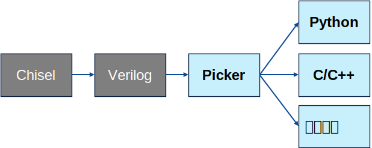

工具介绍
验证工具的基本使用。
Categories:
为满足开放验证的环境要求，我们开发了 Picker 工具，用于将 RTL 设计转换为多语言接口，并在此基础上进行验证，我们将会使用 Picker 工具生成的环境作为基础的验证环境。接下来我们将介绍 Picker 工具，及其基础的使用方法。
Picker 简介
picker 是一个芯片验证辅助工具，具有两个主要功能：
- 打包RTL设计验证模块： picker 可以将 RTL 设计验证模块（.v/.scala/.sv）打包成动态库，并提供多种高级语言（目前支持 C++、Python、Java、Scala、Golang）的编程接口来驱动电路。
- UVM-TLM代码自动生成： picker 能够基于用户提供的 UVM sequence_item 进行自动化的 TLM 代码封装，提供 UVM 与其他高级语言（如 Python）的通信接口。 该工具允许用户基于现有的软件测试框架，例如 pytest、junit、TestNG、go test 等，进行芯片单元测试。
基于 Picker 进行验证的优点:
- 不泄露 RTL 设计：经过 Picker 转换后，原始的设计文件（.v）被转化成了二进制文件（.so），脱离原始设计文件后，依旧可进行验证，且验证者无法获取 RTL 源代码。
- 减少编译时间：当 DUT（设计待测）稳定时，只需要编译一次（打包成 .so 文件）。
- 用户范围广：提供的编程接口多，覆盖不同语言的开发者。
- 使用丰富的软件生态：支持 Python3、Java、Golang 等生态系统。
- 自动化的 UVM 事务封装：通过自动化封装 UVM 事务，实现 UVM 和 Python 的通信。
Picker 目前支持的 RTL 仿真器：
- Verilator
- Synopsys VCS
Picker的工作原理
Picker的主要功能就是将Verilog代码转换为C++或者Python代码，以Chisel开发的处理器为例:先通过Chisel自带的工具将其转换为Verilog代码，再通Picker提供高级编程语言接口。

Python 模块生成
生成模块的过程
Picker 导出 Python Module 的方式是基于 C++ 的。
- Picker 是 代码生成(codegen)工具，它会先生成项目文件，再利用 make 编译出二进制文件。
- Picker 首先会利用仿真器将 RTL 代码编译为 C++ Class，并编译为动态库。（见C++步骤详情）
- 再基于 Swig 工具，利用上一步生成的 C++ 的头文件定义，将动态库导出为 Python Module。
- 最终将生成的模块导出到目录，并按照需求清理或保留其他中间文件。
Swig 是一个用于将 C/C++ 导出为其他高级语言的工具。该工具会解析 C++ 头文件，并生成对应的中间代码。 如果希望详细了解生成过程，请参阅 Swig 官方文档。 如果希望知道 Picker 如何生成 C++ Class，请参阅 C++。
- 该这个模块和标准的 Python 模块一样，可以被其他 Python 程序导入并调用，文件结构也与普通 Python 模块无异。
Python 模块使用
- 参数
--language python或--lang python用于指定生成Python基础库。 - 参数
--example, -e用于生成包含示例项目的可执行文件。 - 参数
--verbose, -v用于保留生成项目时的中间文件。
使用工具生成Python的DUT类
以案例一中的简单加法器为例：
- Picker会自动生成Python的一个基础类，我们称之为DUT类，以前加法器为例，用户需要编写测试用例，即导入上一章节生成的 Python Module，并调用其中的方法，以实现对硬件模块的操作。 目录结构为：
picker_out_adder
├── Adder # Picker 工具生成的项目
│ ├── _UT_Adder.so
│ ├── __init__.py
│ ├── libUTAdder.so
│ ├── libUT_Adder.py
│ └── signals.json
└── example.py # 用户需要编写的代码
- 在DUT对应的DUTAdder类中共有8个方法(位于Adder/init.py文件)，具体如下：
class DUTAdder:
def InitClock(name: str) # 初始化时钟，参数时钟引脚对应的名称，例如clk
def Step(i:int = 1) # 推进电路i个周期
def StepRis(callback: Callable, args=None, args=(), kwargs={}) # 设置上升沿回调函数
def StepFal(callback: Callable, args=None, args=(), kwargs={}) # 设置下降沿回调函数
def SetWaveform(filename) # 设置波形文件
def SetCoverage(filename) # 设置代码覆盖率文件
def RefreshComb() # 推进组合电路
def Finish() # 销毁电路
- DUT对应的引脚，例如reset，clock等在DUTAdder类中以成员变量的形式呈现。如下所示，可以通过value进行引脚的读取和写入。
from Adder import *
dut = DUTAdder()
dut.a.value = 1 # 通过给引脚的.value属性赋值完成对引脚的赋值
dut.a[12] = 1 # 对引脚输入a的第12bit进行赋值
x = dut.a.value # 读取引脚a的值
y = dut.a[12] # 读取引脚a的第12bit的值
驱动DUT的一般流程
- 创建DUT，设置引脚模式。默认情况下，引脚是在一下个周期的上升沿进行赋值，如果是组合逻辑，需要设置赋值模式为立即赋值。
- 初始化时钟。其目的是将时钟引脚与DUT内置的xclock进行绑定。组合逻辑没有时钟可以忽略。
- reset电路。大部分时序电路都需要reset。
- 给DUT输入引脚写入数据。通过“pin.Set(x)”接口，或者pin.vaulue=x进行赋值。
- 驱动电路。时序电路用Step，组合电路用RefreshComb。
- 获取DUT各个引脚的输出进行检测。例如和参考模型进行的结果进行assert对比。
- 完成验证，销毁DUT。调用Finish()时，会把波形，覆盖率等写入到文件。
对应伪代码如下：
# Python DUT 的名字可通过 --tdir 指定
from DUT import *
# 1 创建
dut = DUT()
# 2 初始化
dut.SetWaveform("test.fst")
dut.InitClock("clock")
# 3 reset
dut.reset = 1
dut.Step(1)
dut.reset = 0
dut.Step(1)
# 4 输入数据
dut.input_pin1.value = 0x123123
dut.input_pin3.value = "0b1011"
# 5 驱动电路
dut.Step(1)
# 6 得到结果
x = dut.output_pin.value
print("result:", x)
# 7 销毁
dut.Finish()
其他数据类型
一般情况下，通过上述DUT类自带的接口就能完成绝大部分DUT的验证，但一些特殊情况需要其他对应的接口，例如自定义时钟、异步操作、推进组合电路并写入波形、修改引脚属性等。
在picker生成的DUT类中，除了XData类型的引脚成员变量外，还有XClock类型的xclock和XPort类型的xport。
class DUTAdder(object):
xport: XPort # 成员变量 xport，用于管理DUT中的所有引脚
xclock: XClock # 成员变量 xclock，用于管理时钟
# DUT 引脚
a: XData
b: XData
cin: XData
cout: XData
XData 类
- DUT引脚中的数据通常位宽不确定，且有四种状态：0、1、Z和X。为此picker提供了XData进行电路引脚数据表示。
主要方法
class XData:
#拆分XData，例如把一个32位XData中的第7-10位创建成为一个独立XData
# name：名称，start：开始位，width：位宽，例如auto sub = a.SubDataRef("sub_pin", 0, 4)
def SubDataRef(name, start, width): XData
def GetWriteMode():WriteMode #获取XData的写模式，写模式有三种：Imme立即写，Rise上升沿写，Fall下降沿写
def SetWriteMode(mode:WriteMode) #设置XData的写模式 eg: a.SetWriteMode(WriteMode::Imme)
def DataValid():bool #检测数据是否有效（Value中含有X或者Z态返回false否者true）
def W():int #获取XData的位宽（如果为0，表示XData为verilog中的logic类型，否则为Vec类型的位宽）
def U():int #获取XData的值（无符号，同 x = a.value）
def S():int #获取XData的值（有符号类型）
def String():str #将XData转位16进制的字符串类型，eg: "0x123ff"，如果出现?，表现对应的4bit中有x或z态
def Equal(xdata):bool #判断2个XData是否相等
def Set(value) #对XData进行赋值，value类型可以为：XData, string, int, bytes等
def GetBytes(): bytes #以bytes格式获取XData中的数
def Connect(xdata):bool #连接2个XData，只有In和Out类型的可以连接，当Out数据发生变化时，In类型的XData会自动写入
def IsInIO():bool #判断XData是否为In类型，改类型可读可写
def IsOutIO():bool #判断XData是否为Out类型，改类型只可读
def IsBiIO():bool #判断XData是否为Bi类型，改类型可读可写
def IsImmWrite(): bool #判断XData是否为Imm写入模式
def IsRiseWrite(): bool #判断XData是否为Rise写入模式
def IsFallWrite(): bool #判断XData是否为Fall写入模式
def AsImmWrite() #更改XData的写模式为Imm
def AsRiseWrite() #更改XData的写模式为Rise
def AsFallWrite() #更改XData的写模式为Fall
def AsBiIO() #更改XData为Bi类型
def AsInIO() #更改XData为In类型
def AsOutIO() #更改XData为Out类型
def FlipIOType() #将XData的IO类型进行取反，例如In变为Out或者Out变为In
def Invert() #将XData中的数据进行取反
def At(index): PinBind #获取第index, eg: x = a.At(12).Get() or a.At(12).Set(1)
def AsBinaryString() #将XData的数据变为二进制字符串，eg: "1001011"
为了简化赋值操作，XData 对 Set(value) 和 U() 方法进行了属性赋值重载，可以通过pin.value=x 和 x=pin.value进行赋值和取值。
# 使用.value可以进行访问
# a 为XData类型
a.value = 12345 # 十进制赋值
a.value = 0b11011 # 二进制赋值
a.value = 0o12345 # 八进制赋值
a.value = 0x12345 # 十六进制赋值
a.value = -1 # 所有bit赋值1, a.value = x 与 a.Set(x) 等价
a[31] = 0 # 对第31位进行赋值
a.value = "x" # 赋值高阻态
a.value = "z" # 赋值不定态
x = a.value # 获取值，与 x = a.U() 等价
XPort 类
- 在处理少数几个XData引脚时，直接操作XData是比较清晰和直观的。但是，当涉及到多个XData时，进行批量管理就不太方便了。XPort是对XData的一种封装，它允许我们对多个XData进行集中操作。我们还提供了一些方法来方便地进行批量管理。
初始化与添加引脚
port = XPort("p") #创建前缀为p的XPort实例
主要方法
class XPort:
def XPort(prefix = "") #创建前缀为prefix的port， eg：p = XPort("tile_link_")
def PortCount(): int #获取端口中的Pin数量（即绑定的XData个数）
def Add(pin_name, XData) #添加Pin, eg：p.Add("reset", dut.reset)
def Del(pin_name) #删除Pin
def Connect(xport2) #链接2个Port
def NewSubPort(std::string subprefix): XPort # 创建子Port，以subprefix开头的所有Pin构成子Port
def Get(key, raw_key = False): XData # 获取XData
def SetZero() #设置Port中的所有XData为0
XClock 类
- XClock是电路时钟的封装，用于驱动电路。在传统仿真工具（例如Verilator）中，需要手动为clk赋值，并通过step_eval函数更新状态。但在我们的工具中，我们提供了相应的方法，可以将时钟直接绑定到XClock上。只需使用我们的Step()方法，就可以同时更新clk和电路状态。
初始化与添加引脚
# 初始化
clk = XClock(stepfunc) #参数stepfunc为DUT后端提供的电路推进方法，例如verilaor的step_eval等
主要方法
class XClock:
def Add(xdata) #将Clock和时钟进行绑定， eg：clock.Add(dut.clk)
def Add(xport) #将Clock和XData进行绑定
def RefreshComb() #推进电路状态，不推进时间，不dump波形
def RefreshCombT() #推进电路状态（推进时间，dump波形）
def Step(int s = 1) #推进电路s个时钟周期， DUT.Step = DUT.xclock.Step
def StepRis(func, args=(), kwargs={}) #设置上升沿回调函数，DUT.StepRis = DUT.xclock.StepRis
def StepFal(func, args=(), kwargs={}) #设置下降沿回调函数，DUT.StepFal = DUT.xclock.StepFal
# 异步方法
async AStep(cycle: int) #异步推进cycle个时钟， eg：await dut.AStep(5)
async ACondition(condition) #异步等待conditon()为true
async ANext() #异步推进一个时钟周期，等同AStep(1)
async RunStep(cycle: int) #持续推进时钟cycle个时钟，用于最外层